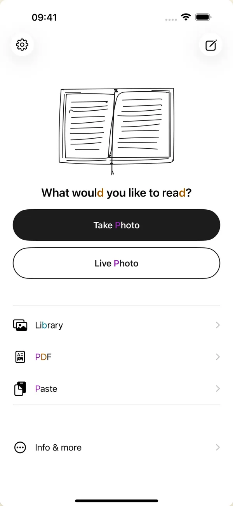
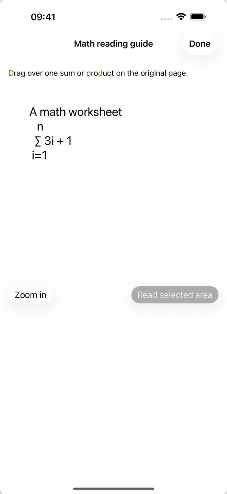

A free, offline iOS app for dyslexia and dyscalculia. Text from any photo or screenshot, re-rendered your way, with the math symbols decoded too.
- Free
- Works offline
- No tracking
- EN · ES · DE · 中文
A free, offline iOS app for dyslexia and dyscalculia. Text from any photo or screenshot, re-rendered your way, with the math symbols decoded too.
The same page, before and after. Drag the handle to wipe the original clean and reveal how ClearPage reshapes it.



Dyscalculia gets almost nothing. Every major reader assumes the problem is words, so notation is left exactly as it was: symbols that look alike, meanings you're expected to already know, formulas no voice reads correctly. ClearPage treats math as part of the page.

New in 2.0: two-dimensional math. Fractions, sums, integrals and derivatives are read as structure instead of being flattened into a line of characters. Select one on the page and go through it piece by piece.
Type or paste anything below, then flip the switches and watch the text reshape, the same way ClearPage does it on your phone. Nothing leaves your browser.
Letter anchors color the letters that mirror each other, b, d, p, q, so they stop flipping.
Dyslexia isn't a reading problem, it's a formatting problem. Dyslexic readers don't struggle with words themselves, but with how they sit on the page: tight spacing, standard fonts, and no room to breathe turn reading into work.
ClearPage removes that barrier. Snap a photo or screenshot and it re-renders the text in a layout you control, your spacing, your typeface, your colors. Reading stops being a battle and becomes a choice, on your own device, with no Wi-Fi needed.
The curb cut effect: design for one, help everyone.
Made for dyslexia, useful for everyone.

Twenty-five years in product and communication design. Markus came to ClearPage from the outside, saw what wasn't working, and rethought all of it: the direction, the experience, and every single screen. The app you download today looks and feels the way it does because of him.
mcs-solutions.de →ClearPage gets better through the people who read with it. Here's how you can help shape what comes next.
Something still hard to read, a feature you miss, a bug? Tell me, it goes straight onto the list.
Write to me →Test new features early, help bring ClearPage to your language, or bring your own skills. Every kind of help counts.
Get involved →A rating on the App Store helps other readers find ClearPage. It takes a minute and matters a lot.
Rate ClearPage →Yes, no ads, no subscription, nothing to unlock. Accessibility shouldn't come at a cost. You can chip in on the support page if you'd like.
Completely. OCR and Read Aloud run on-device, no Wi-Fi, no signal needed.
Your photos and profile never leave your device. No accounts, no network, no analytics. Privacy policy.
OCR and the full interface in English, Spanish, German, and Simplified Chinese. ClearPage follows your device language.
An iPhone or iPad. Grab it free on the App Store and start scanning right away.
Localized in EN, ES, DE & ZH, scales with Dynamic Type for low vision, and fully VoiceOver-labeled with Reduce Motion support.
No account, no ads, no Wi-Fi needed.